Привет! Пора пройти ежегодный инструктаж по безопасности труда!
Новые инструкции короткие и понятные. Прочитайте и распишитесь в документах в 207 кабинете. Если вы в удаленном офисе - мы приедем самостоятельно. По всем вопросам, обращайтесь к нам:
Охрана труда
Охрана труда — система сохранения жизни и здоровья работников во время работы.
Мероприятия по охране труда
- правовые - установить нормы безопасной работы и контролировать их соблюдение
- лечебно-профилактические - проводить медосмотры
- санитарно-гигиенические - предупредить профзаболевания
- социально-экономические - стимулировать повышение уровня охраны труда
- организационно-технические - организовать работу по охране труда, обучить работников
- реабилитационные - переводить работников на легкий труд по медицинским показаниям
- иные.
Трудовой кодекс РФ
Трудовой кодекс разъясняет обязанности и права работников. Конкретный порядок действий указан в соответствущих законах: об обучении по охране труда, о проведении специальной оценки, о средствах индивидаульной защиты и т.д.
Обязанности по охране труда
- Работодатель обязан:
- обеспечить условия труда на каждом рабочем месте, согласно нормам;
- обеспечить средствами индивидуальной защиты - спецодеждой, смывающими средствами;
- обучить и проверять знания по безопасной работе, охране труда и оказанию первой помощи пострадавшим на производстве;
- провести специальную оценку условий труда;
- информировать работников об условиях труда, о риске для здоровья, гарантиях, компенсациях и средствах индивидуальной защиты;
- ознакомить работников с требованиями охраны труда.
- Работник обязан:
- соблюдать требования охраны труда;
- правильно применять средства индивидуальной и коллективной защиты;
- обучаться безопасной работе, охране труда и оказанию первой помощи пострадавшим на производстве;
- немедленно сообщать руководителю о любой ситуации, угрожающей жизни и здоровью людей: о каждом несчастном случае, происшедшем на работе, или об ухудшении состояния здоровья, в том числе о проявлении признаков острого профессионального заболевания (отравления).
Условия труда на рабочем месте
Условия труда - сочетание факторов трудового процесса и рабочей среды. Неблагоприятно действующие на работника факторы различают на вредные и (или) опасные производственные факторы.
Вредные и опасные производственные факторы:
- Физические – вызваны физическими свойствами работы или рабочей среды (шум; вибрация; параметры микроклимата, световой среды; неионизирующие излучения и т. д.).
- Химические – вызваны химическими и физико-химическими свойствами используемых или находящихся в рабочей зоне веществ и материалов (едкие вещества; продукты нефтепереработки; синтетические жидкости; красители; удобрения, опасные летучие соединения; продукты горения и т. д.).
- Биологические – вызваны биологическими свойствами микроорганизмов, находящихся в биообъектах и (или) загрязняющих рабочей среды (живые клетки и споры, содержащиеся в бактериальных препаратах, возбудители инфекционных заболеваний и т.д.).
- Психофизиологические – вызваны психическими и физиологическими свойствами и особенностями человеческого организма и личности работающего (тяжесть и напряженность).
- На работника компании действуют следующие вредные производственные факторы:
- микроклимат;
- свет;
- электромагнитные поля;
- напряженность трудового процесса.
Помимо этого, на рабочем месте есть опасный производственный фактор - поражение электрическим током.
Для выявления и оценки влияния вредных и (или) опасных факторов на работника работодатель проводит специальную оценку условий труда.
Работа на компьютере
- Чтобы работа на компьютере не вредила здоровью, соблюдайте правила:
- Отрывайтесь от монитора 1 раз в час и посмотрите вдаль - дайте отдохнуть глазам;
- Вставайте со стула несколько раз в день - непрерывное сидение на стуле приводит к болезням спины.
- Проверяйте исправность компьютера перед началом работы;
- Отрегулируйте кресло и монитор так, чтобы было удобно;
- Освободите место для ног под столом;
- Расположите вещи на рабочем столе так, чтобы дотягиваться не вставая;
- Работайте в очках или линзах, если у вас плохое зрение;
- Сообщите руководителю, если компьютер не исправен, не чините самостоятельно;
Правила поведения сотрудника на территории компании
Работник обязан соблюдать требования охраны труда, пожарной безопасности и правила внутреннего трудового распорядка на территории компании.
- Требования безопасности в офисе:
- соблюдать осторожность на влажном полу;
- не подниматься и не спускаться бегом по лестничным маршам;
- не садиться и не облокачиваться на случайные предметы и ограждения;
- не прикасаться к электрическим проводам, кабелям электротехнических установок;
- выполнять требования сигналов и знаков безопасности;
- запрещено заходить в подсобные и технические помещения без производственной необходимости.
- Требования безопасности во дворе офиса:
- соблюдать правила дорожного движения РФ, находясь на дороге, как пешеход и как водитель
- быть внимательным при переходе проезжей части;
- обходить автомобили спереди - чтобы вас видел водитель;
- при выходе из здания убедиться в отсутствии движущегося транспорта;
- не перебегать дорогу перед движущимся автомобилем;
- быть внимательным к сигналам автомобилей водителями;
- соблюдать правила пользования общественным транспортом.
- во время гололёда:
- не торопитесь;
- обходите скользкие, опасные места;
- передвигайтесь мелкими шагами;
- идите по посыпанным песком дорогам;
- не держите руки в карманах;
Требования производственной санитарии и личной гигиены
В офисе есть санитарно-бытовые помещения, кулеры с водой, столовая, место для курения.
- Требования производственной санитарии и личной гигиены:
- содержать рабочее место в чистоте;
- соблюдать чистоту рук, лица, волос, тела, одежды.
- принимать пищу только в столовой;
- Работникам общественного питания запрещается находиться на кухне без санитарной одежды и головных уборов;
Запрещается принимать пищу на рабочем месте или в иных местах не оборудованных для этого.
Ответственность за личную гигиену и содержание рабочего места в чистоте несет каждый работник.
Средства коллективной защиты (СКЗ) и индивидуальной защиты (СИЗ)
СКЗ и СИЗ - это технические средства для предотвращения или уменьшения действия вредных и опасных производственных факторов на работников, а также для защиты от загрязнения.
При этом Средства коллективной защиты располагаются в помещении или на оборудовании, а Средства индивидуальной защиты используются работником лично. Например: перчатки, респиратор, резиновые сапоги, защитная маска и тому подобные.
Работникам, занятым на работах с вредными и (или) опасными условиями труда, а также на работах, выполняемых в особых температурных условиях или связанных с загрязнением выдаются соответствующие СИЗ. Выдача происходит в соответствии с типовыми государственными нормами.
- Требования по использованию СИЗ:
- работайте в удобной обуви, плотно сидящей на ноге, на непромокаемой и нескользящей подошве;
- Регулярно стирайте спецодежду: стиральные машины и моющие средства предоставлены компанией.
- верхнюю одежду и личные вещи храните в специально отведенных помещениях или местах;
- Работникам общественного питания запрещается находиться на кухне без санитарной одежды и форменных головных уборов;
- Виды СИЗ
- 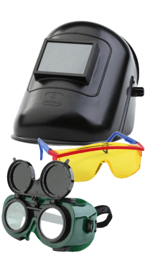 Средства защиты глаз и лица
- 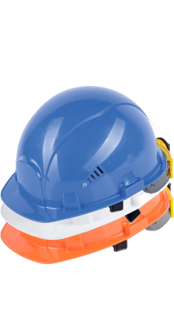 Средства защиты головы
- 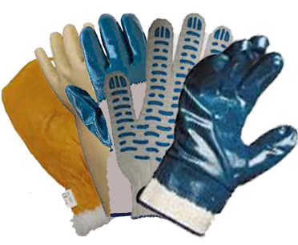 Средства защиты рук
-
 Средства защиты органов дыхания
Средства защиты органов дыхания
- 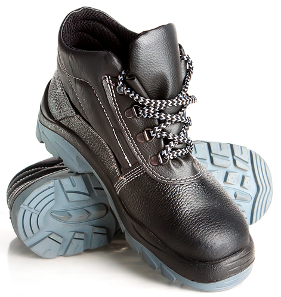 Средства защиты ног
- Средства защиты органов слуха
- 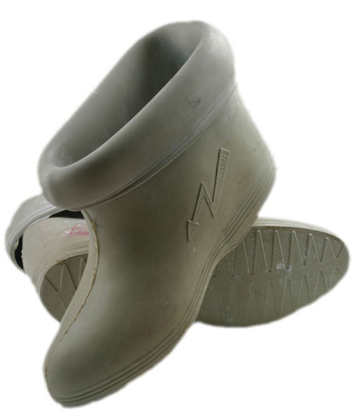 Средства защиты от поражения электрическим током
- 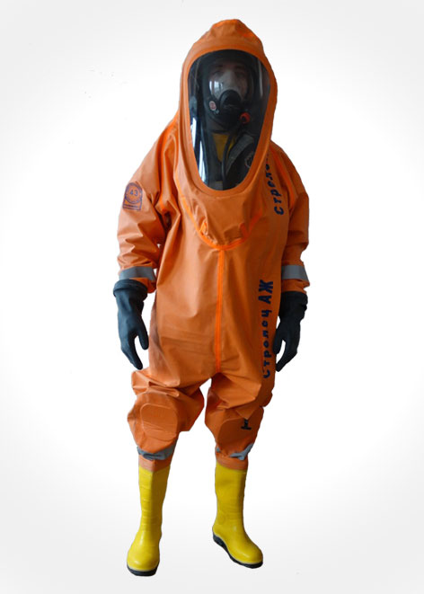 Средства защиты изолирующие
- Средства защиты кожи
- 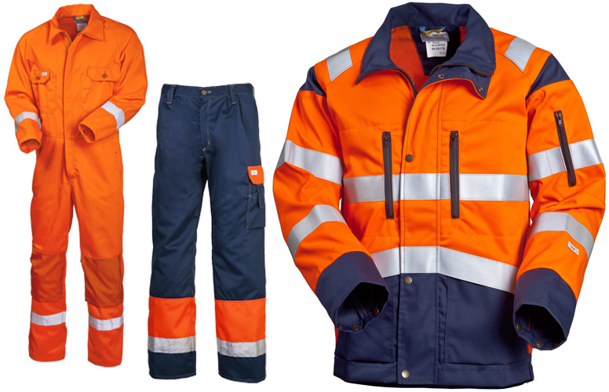 Средства защиты от пониженных температур
- 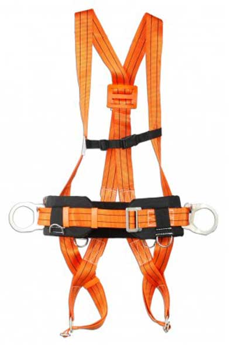 Средства защиты при работе на высоте
Несчастные случаи на производстве
Несчастный случай на производстве - это травма или резкое ухудшение здоровья работника в рабочее время на рабочем месте или при осуществлении других действий по заданию руководителя.
- При любом несчастном случае незамедлительно:
- вызвать скорую помощь по номеру тел. 103 или 112;
- оказать первую помощь пострадавшему;
- сообщить руководителю и специалисту по охране труда;
- По возможности устранить опасности для окружающих;
- сохранить обстановку до начала расследования, какой она была на момент происшествия, если это не угрожает жизни и здоровью других лиц и не ведет к аварии; в случае невозможности – сфотографировать или нарисовать схему обстановки.
103 или 112 с мобильного, 03 с городского телефона
ВАЖНО! Работники обязаны незамедлительно сообщить руководителю и специалисту по охране труда о каждом несчастном случае или резком ухудшении здоровья. Если непосредственный руководитель не на связи, то соообщить вышестоящему руководителю.
Знаки безопасности
| Группа знаков | Геометрическая форма | Сигнальный цвет | Смысловое значение |
|---|---|---|---|
| Запрещающие | Красный | Запрещение опасного поведения или действия | |
| Предупреждающие | 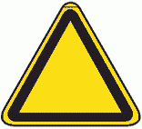 | Желтый | Предупреждение о возможной опасности. Осторожность. Внимание |
| Предписывающие | 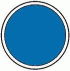 | Синий | Предписание обязательных действий во избежание опасности |
| Знаки пожарной безопасности* | Красный | Обозначение мест нахождения средств противопожарной защиты | |
| Эвакуационные и медицинского назначения | Зеленый | Направления движения при эвакуации. Спасение, первая помощь при авариях или пожарах. | |
| Указательные | Синий | Разрешение. Указание. Надпись или информация |
* К знакам пожарной безопасности относят также некоторые запрещающие, предупреждающие и эвакуационные знаки.
- Запрещающие знаки
-
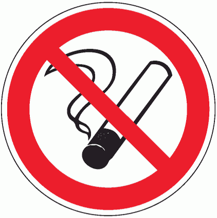
Запрещается курить
-
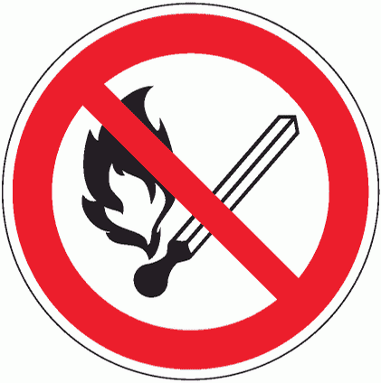
Запрещается пользоваться открытым огнем и курить
-
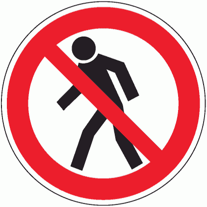
Проход запрещен
-
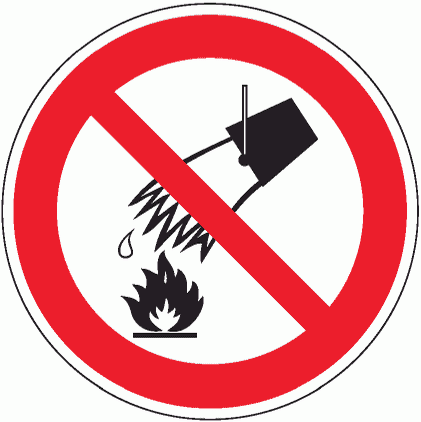
Запрещается тушить водой
-
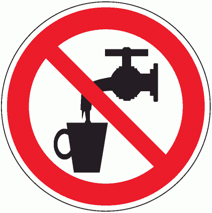
Запрещается использовать в качестве питьевой воды
-
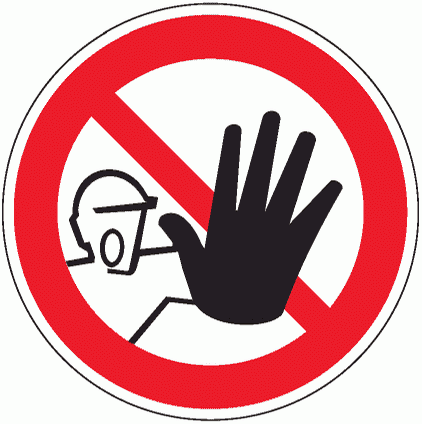
Доступ посторонним запрещен
-
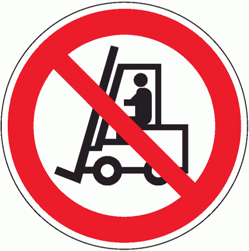
Запрещается движение средств напольного транспорта
-
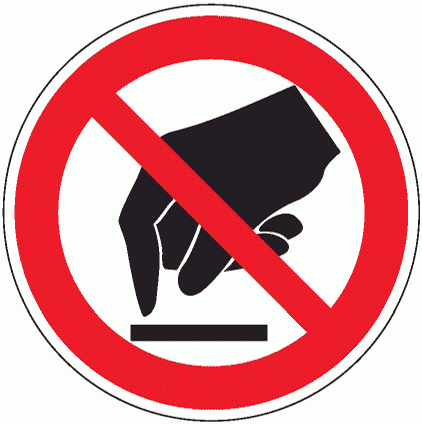
Запрещается прикасаться. Опасно
-
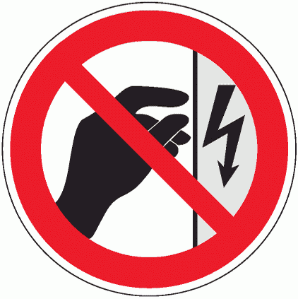
Запрещается прикасаться. Корпус под напряжением
-
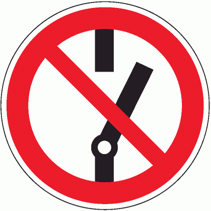
Не включать!
-
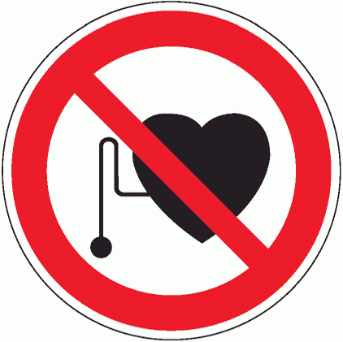
Запрещается работа (присутствие) людей со стимуляторами сердечной деятельности
-
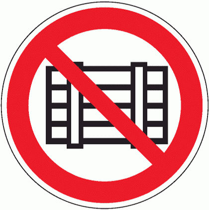
Запрещается загромождать проходы и/или складировать
-
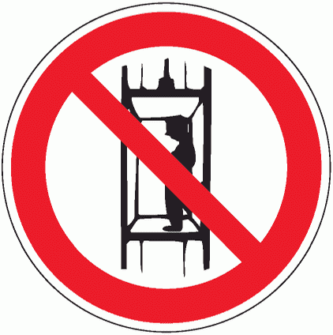
Запрещается подъем (спуск) людей по шахтному стволу (запрещается транспортирование пассажиров)
-
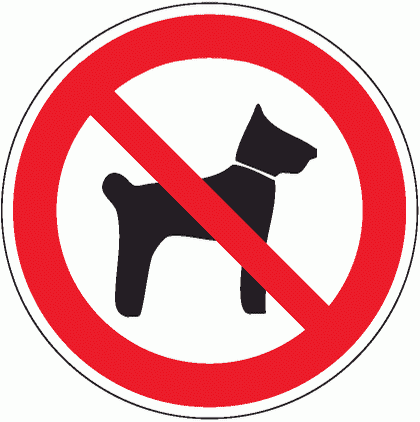
Запрещается вход (проход) с животными
-
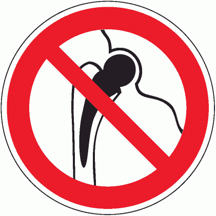
Запрещается работа (присутствие) людей, имеющих металлические имплантанты
-
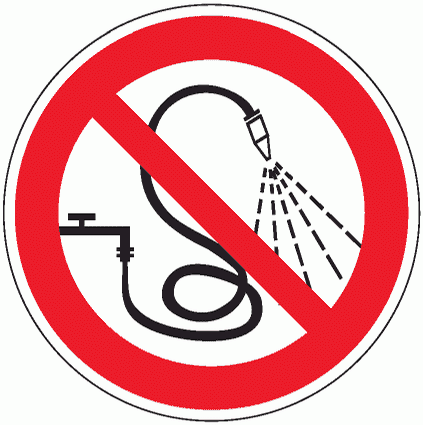
Запрещается разбрызгивать воду
-
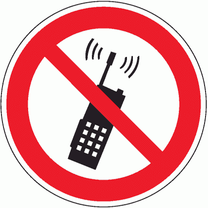
Запрещается пользоваться мобильным (сотовым) телефоном или переносной рацией
-
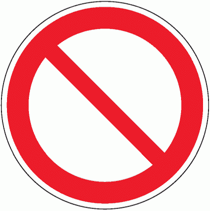
Запрещение (прочие опасности или опасные действия)
-
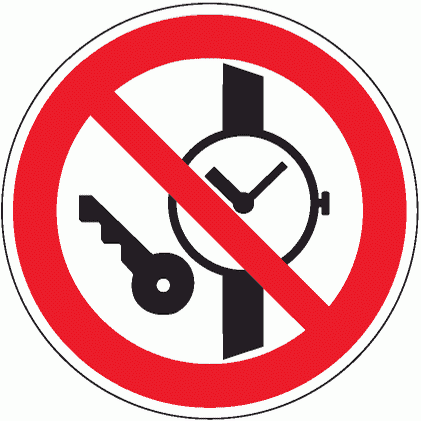
Запрещается иметь при (на) себе металлические предметы (часы и т.п.)
-
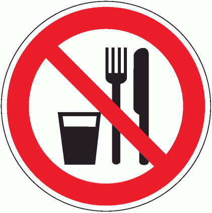
Запрещается принимать пищу
-
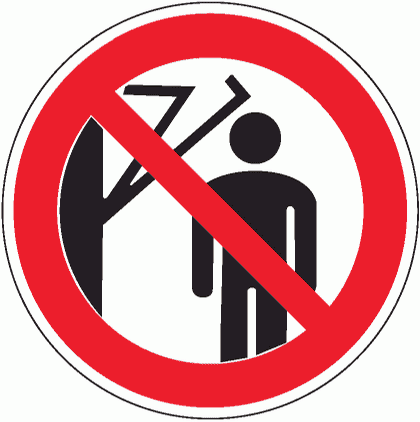
Запрещается подходить к элементам оборудования с маховыми движениями большой амплитуды
-
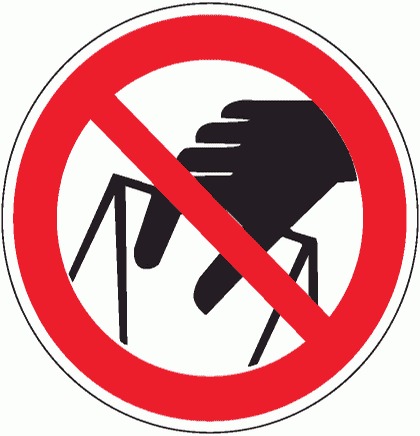
Запрещается брать руками. Сыпучая масса (непрочная упаковка)
-
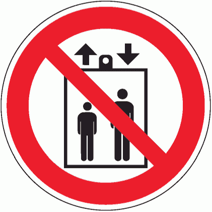
Запрещается пользоваться лифтом для подъема (спуска) людей
- Предупреждающие знаки
-
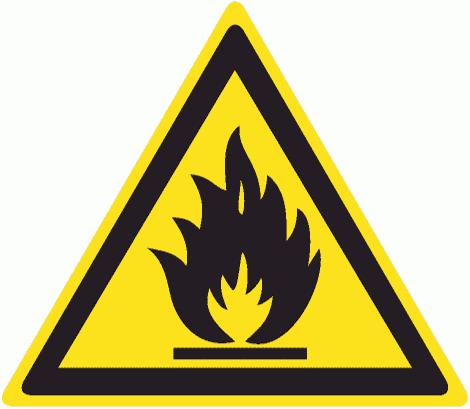
Пожароопасно. Легковоспламеняющиеся вещества
-
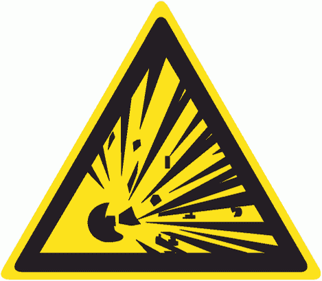
Взрывоопасно
-
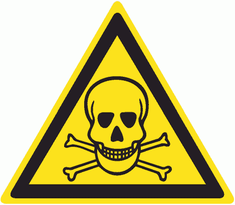
Опасно. Ядовитые вещества
-
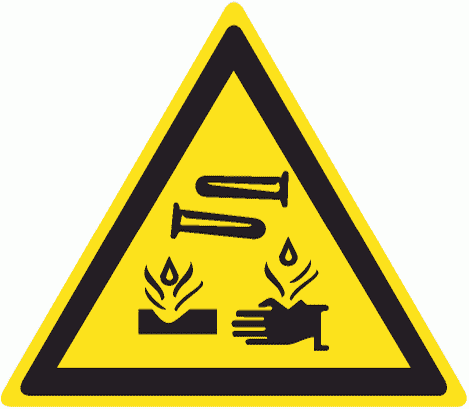
Опасно. Едкие и коррозионные вещества
-
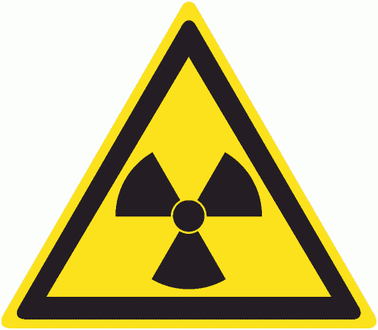
Опасно. Радиоактивные вещества или ионизирующее излучение
-
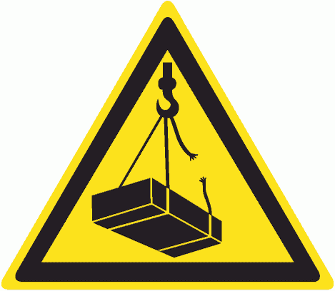
Опасно. Возможно падение груза
-
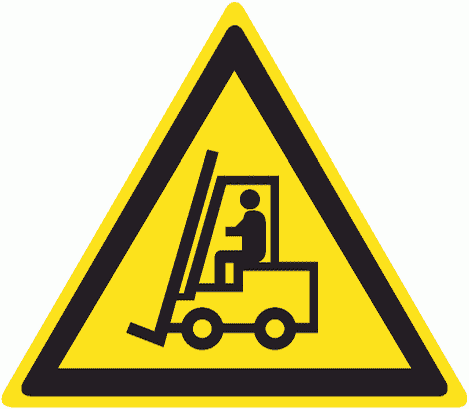
Внимание. Автопогрузчик
-
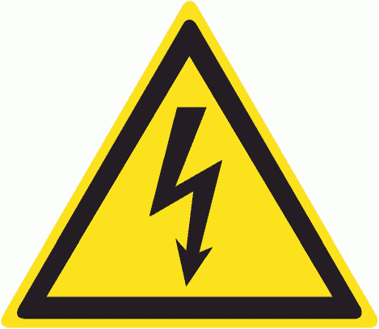
Опасность поражения электрическим током
-
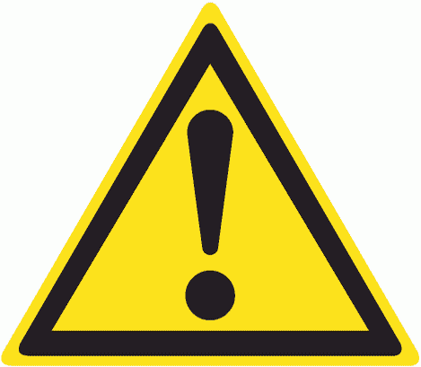
Внимание. Опасность (прочие опасности)
-
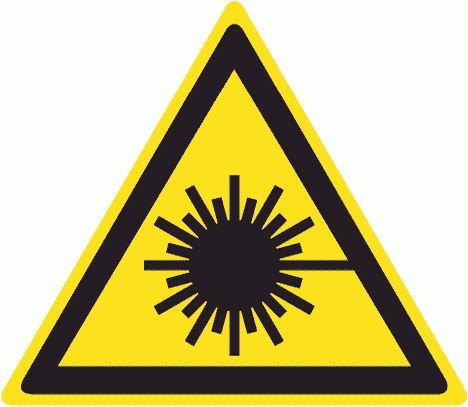
Опасно. Лазерное излучение
-
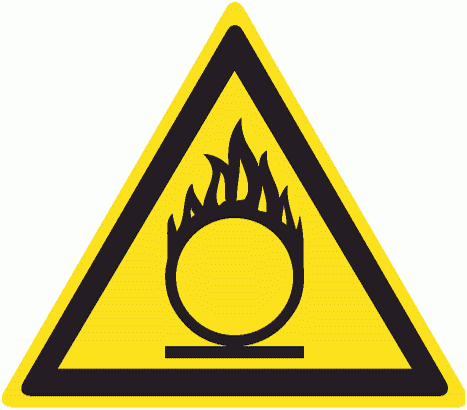
Пожароопасно. Окислитель
-
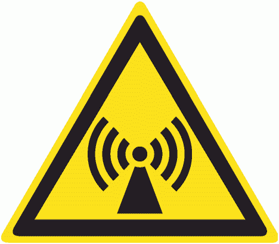
Внимание. Электромагнитное поле
-
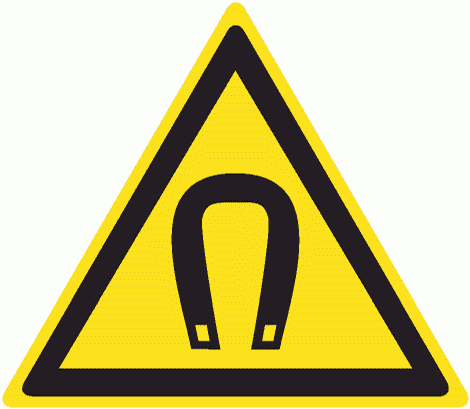
Внимание. Магнитное поле
-
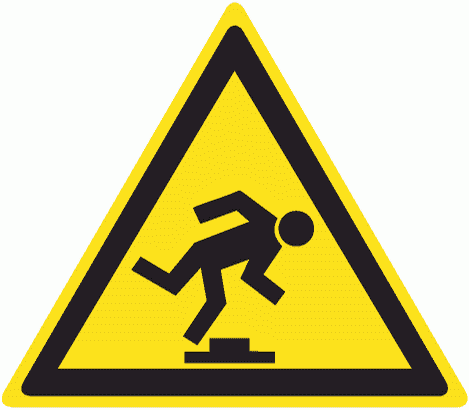
Осторожно. Малозаметное препятствие
-
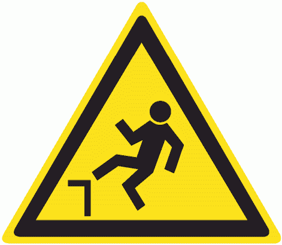
Осторожно. Возможность падения с высоты
-
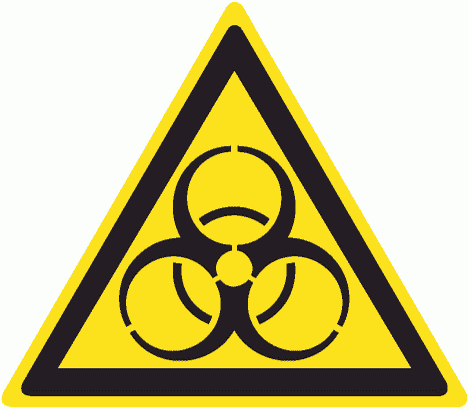
Осторожно. Биологическая опасность (инфекционные вещества)
-
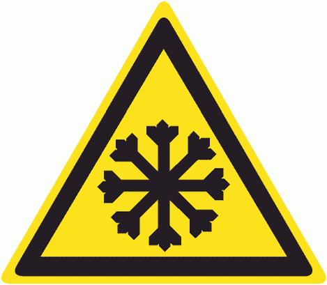
Осторожно. Холод
-
Осторожно. Вредные для здоровья аллергические (раздражающие) вещества
-
Газовый баллон
-
Осторожно. Аккумуляторные батареи
-
Осторожно. Режущие валы
-
Внимание. Опасность зажима
-
Осторожно. Возможно опрокидывание
-
Внимание. Автоматическое включение (запуск) оборудования
-
Осторожно. Горячая поверхность
-
Осторожно. Возможно травмирование рук
-
Осторожно. Скользко
-
Осторожно. Возможно затягивание между вращающимися элементами
-
Осторожно. Сужение проезда (прохода)
- Предписывающие знаки
-
Работать в защитных очках
-
Работать в защитной каске (шлеме)
-
Работать в защитных наушниках
-
Работать в средствах индивидуальной защиты органов дыхания
-
Работать в защитной обуви
-

Работать в защитных перчатках
-
Работать в защитной одежде
-
Работать в защитном щитке
-
Работать в предохранительном (страховочном) поясе
-
Проход здесь
-
Общий предписывающий знак (прочие предписания)
-
Переходить по надземному переходу
-
Отключить штепсельную вилку
-
Отключить перед работой
-
Курить здесь
- Знаки пожарной безопасности
-
Направляющая стрелка
-
Направляющая стрелка под углом 45°
-
Пожарный кран
-
Пожарная лестница
-
Огнетушитель
-
Телефон для использования при пожаре
-
Место размещения нескольких средств противопожарной защиты
-
Пожарный водоисточник
-
Пожарный сухотрубный стояк
-
Пожарный гидрант
-
Кнопка включения установок (систем) пожарной автоматики
-
Звуковой оповещатель пожарной тревоги
- Эвакуационные и знаки медицинского и санитарного назначения
-
Выход здесь
-
Направляющая стрелка
-
Направление к эвакуационному выходу
-
Указатель двери эвакуационного выхода
-
Направление к эвакуационному выходу
-
Направление к эвакуационному выходу по лестнице
-
Для доступа вскрыть здесь
-
Открывать движением от себя
-
Открывать движением на себя
-
Для открывания сдвинуть
-

Пункт (место) сбора
-
Указатель выхода
-
Указатель аварийного выхода
-
Аптечка первой медицинской помощи
- Указательные знаки
-
Пункт (место) приема пищи
-
Питьевая вода
-
Место курения
Поздравляем! Вы прошли инструктаж по охране труда.
Пожарная безопасность
Пожарная безопасность — состояние, при котором можно предотвратить или остановить пожар.
Пожар— неконтролируемое горение, причиняющее материальный ущерб, опасность жизни и здоровью людей.
Пожар легче предупредить, чем потушить!
- Обязанности работников по пожарной безопасности:
- соблюдать и поддерживать противопожарный режим;
- убедиться в исправности электрооборудовании перед началом работы;
- сообщить непосредственному руководителю, если обнаружили нарушение;
- знать расположение огнетушителей и как им пользоваться;
- знать действия при эвакуации.
- Запрещается:
- курить в офисе и территории за исключением места для курения;
- пользоваться неисправными электроприборами: розетками, рубильниками, другими элементами электропитания;
- подключать к одной розетке несколько мощных электроприборов;
- загромождать пути эвакуации, эвакуационные выходы, подступы к электрощитам и противопожарному инвентарю;
- применять нагревательные приборы без согласования с руководством;
- приносить на работу и хранить легковоспламеняющиеся жидкости и материалы;
Действия при пожаре в здании
Точка сбора при эвакуации из офиса BingoBoom
После того, как вы покинули здание, соберайтесь в точке сбора на Симоновском Валу. Убедитесь, что ваши коллеги и посетители покинули здание, если кого-то не хватает — сообщите об этом руководителю. Не покидайте точку сбора, пока вас не отпустит ваш руководитель.

Первичные средства пожаротушения
- огнетушители
- пожарные краны в здании
- Самосрабатывающие огнетушители
- щиты пожарные
- установки аэрозольного пожаротушения
- противопожарное полотно
Классификация огнетушителей
По огнетушащему веществу (ОТВ) огнетушители подразделяют на виды:
- порошковые (ОП)
- газовые: углекислотные (ОУ), хладоновые (ОХ)
- воздушно-пенные (ОВП)
- водные (ОВ)
- воздушно-эмульсионные (ОВЭ)
На этикетке огнетушителя указано для тушения каких классов пожаров он подходит:
- горение твердых веществ
- горение жидких веществ
- горение газообразных веществ
- горение металлов или металлоорганических веществ
- пожары электрооборудования, находящегося под напряжением
Порошковый огнетушитель подходит для офисных и складских помещений. Углекислотный огнетушитель - для серверных.
Углекислотный огнетушитель
Принцип действия. Углекислый газ поступает к раструбу и из сжиженного состояния переходит в снегообразное и охлаждается до -70°С. Углекислота охлаждает и изолирует горящее вещество от кислорода.
Порошковый огнетушитель
Принцип действия. Газ поступает в нижнюю часть корпуса огнетушителя и создает избыточное давление вытесняет порошок в шланг к стволу. Порошок охлаждает и изолирует горящее вещество от кислорода . Нажимая на курок ствола, можно подавать порошок порциями.
Правила работы с огнетушителем
- Не беритесь голой рукой за раструб углекислотного огнетушителя, что не обморозить руку
- Тушите пожар с наветренной стороны
- Тушите от основания пожара
- В нишах тушите сверху вниз
- Тушите пожар несколькими огнетушителями
- Убедитесь, что пожар не возгорится повторно
- Не допускайте скруток и перегибов на шланге огнетушителя.
- Сдайте на перезарядку использованные огнетушители
- При тушении электроустановок порошком подавай заряд порциями через 3-5 c. Не подносить огнетушитель ближе 1 метра
Поздравляем! Вы прошли противопожарный инструктаж.
Электробезопасность
Электрический ток - это скрытый вид опасности. Если коснуться токоведущих частей оборудования или оголенных проводов под напряжением, можно получить электротравму. Результат элктротравмы колеблется от легкого испуга до остановки дыхания и или сердцебиения. Электротравмы часто сопровождаются ожогами в местах входа выхода электрического тока.
- Причины электротравматизма:
- прикосновение к неизолированным токоведущим частям.
- неисправное электрооборудование или электропроводка. В таких случаях напряжение тока может подаваться, например, на корпус электроборудования, пол или стену помещения. Травмы по этой причине случаются часто, так как человек не ожидает напряжения тока в таких условиях.
- Чтобы не получить электротравму, соблюдаем правила:
- не прикасаться к неизолированным и не огражденным токоведущим частям электрооборудования и электропроводки;
- не наступать на переносные электрические провода, лежащие на полу. Не снимать ограждения и защитные кожухи с токоведущих частей оборудования, аппаратов и приборов, не открывать двери электрораспределительных шкафов (щитов), не класть в них никаких предметов;
- использовать в складских и офисных помещениях переносные электронагревательные приборы (электрочайники, электрокипятильники, электроплитки и т.д.) запрещается;
- не ремонтировать электрооборудование самостоятельно, не заменять лампы освещения и не протировать их. Эти работы проводит только технический персонал;
- сообщить руководителю, если обнаружили нарушения изоляции электропроводок, неисправность электроборудования;
Шаговое напряжение
Шаговое напряжение — напряжение, протекающее по земле или по токопроводящему полу, и равное разности потенциалов между двумя точками поверхности земли (пола), находящимися на расстоянии одного шага человека.
Шаговое напряжение уменьшается от места касания провода пола или земли, наименьшее напряжение - на расстоянии от 10 м..
При попадании в область действия шагового напряжения необходимо выходить из опасной зоны.
Если вы попали в область действия шагового напряжения, медленно выходите из опасной зоны "гусиным шагом": мелкими скользящими шагами, пятка шагающей ноги, не отрываясь от земли, приставляется к носку другой ноги. Передвигайтесь по сухим непроводящим электрический ток предметам, избегайте кирпичей и железобетонных конструкций, обходите влажные участки грунта.
Если вы увидите лежащий на земле провод – ни в коем случае нельзя к нему приближаться, опасная зона может быть от 5-8 метров вокруг точки соприкосновения провода с землей и больше, в зависимости от класса напряжения линии и состояния земли (мокрая земля увеличивает пространство растекания электрического тока). Для осуществления каких-либо спасательных операций, понадобятся специальные меры защиты. Это костюм, выполненный из неприводимого материала и определенные знания оказания первой помощи.
Первая помощь при поражении электрическим током
Поздравляем! Вам присвоена I группа по электробезопасности.
Гражданская оборона
Гражданская оборона (ГО) — меры по защите людей и материальных ценностей в случае военных действий, стихийных бедствий или техногенных катастроф.
Наша компания не имеет категории по ГО, поэтому работникам компании достаточно знать действия в чрезвычайных ситуациях (ЧС).
- Сигналы оповещения ГО при ЧС:
- «ВНИМАНИЕ ВСЕМ» с информацией о воздушной тревоге;
- «ВНИМАНИЕ ВСЕМ» с информацией о химической тревоге;
- «ВНИМАНИЕ ВСЕМ» с информацией о радиационной опасности;
- «ВНИМАНИЕ ВСЕМ» с информацией об угрозе катастрофического затопления;
- «ВНИМАНИЕ ВСЕМ» с информацией об отбое воздушной тревоги, химической тревоги, радиационной опасности, угрозы катастрофического затопления.
Порядок действий. Услышав сигнал «ВНИМАНИЕ ВСЕМ», включите радио, телевизор, войдите в сеть Интернет или подойдите к уличным средствам оповещения и прослушайте сообщение. В случае ЧС, действуйте по полученной инструкции.
- В сообщении указывается:
- Источник информации;
- Место, время и характер ЧС;
- Метеоданные;
- Какие районы поражены опасными факторами;
- Порядок действий населения.
Порядок действий при сигнале оповещений ГО
- По сигналу «ВОЗДУШНАЯ ТРЕВОГА»:
- Отключить свет, газ, воду, отопительные приборы. Плотно закрыть окна.
- Взять документы, аптечку, необходимые вещи.
- Укрыться в закрепленном защитном сооружении (далее - ЗС) или в складах
местности. Выполнять все требования руководителя звена (группы) по обслуживанию
ЗС.
- По сигналу «ХИМИЧЕСКАЯ ТРЕВОГА»:
- Немедленно надеть противогаз, а в случае необходимости имеющуюся защитную одежду.
- Отключить свет, газ, воду, отопительные приборы. Плотно закрыть окна, отключить вытяжку, обеспечить герметизацию
помещений.
- Взять документы, аптечку, необходимые вещи.
- Укрыться в закрепленном ЗС. Выполнять все требования руководителя звена (группы) по обслуживанию ЗС.
- По сигналу «РАДИАЦИОННАЯ ОПАСНОСТЬ»:
- Надеть респиратор.
- Отключить свет, газ, воду, отопительные приборы. Плотно закрыть окна,
отключить вытяжку, обеспечить герметизацию помещений.
- Взять документы, аптечку, необходимые вещи.
- Принять из КИМГ (Комплект Индивидуальной Медицинской
Гражданской Защиты) по указанию медицинского работника
противорадиационные средства.
- Укрыться в закрепленном ЗС или в заглубленных помещениях (подвалах,
подпольях и т.д.). Выполнять все требования руководителя звена (группы) по
обслуживанию ЗС.
- По сигналу «УГРОЗА КАТАСТРОФИЧЕСКОГО ЗАТОПЛЕНИЯ»:
- Отключить свет, газ, воду, отопительные приборы, электричество. Плотно закрыть окна, двери.
- Взять документы, аптечку, необходимые вещи.
- Эвакуироваться из опасной зоны. Если нет возможности - занять ближайшее возвышенное место, забраться на крупное дерево или
верхний этаж устойчивого здания.
- По сигналу «ОТБОЙ» вышеперечисленных сигналов:
- Вернуться из защитного сооружения к месту работы или домой.
- Быть в готовности к возможному повторению сигналов оповещения ГО.
Средства индивидуальной защиты при чрезвычайных ситуациях
Средства индивидуальной защиты (СИЗ) – средства индивидуального пользования для предотвращения или уменьшения действия вредных и опасных производственных факторов на работников, а также для защиты от загрязнения.
Средства индивидуальной защиты
- Средства индивидуальной защиты органов дыхания (СИЗОК) – СИЗ для защиты органов дыхания, глаз от аэрозолей, паров, капель опасных химических веществ. К СИЗОК относятся: противогазы, респираторы, противопыльные тканевые маски и ватно-марлевые повязки.
- Средства индивидуальной защиты кожи (СИЗК) – СИЗ для защиты кожи от отравляющих, радиоактивных, аварийно химически опасных веществ и бактериальных средств. К СИЗК относятся: средства защиты головы, средства защиты лица, средства защиты глаз, средства защиты рук, средства защиты органов слуха, средства защиты ног, костюмы изолирующие, одежда специальная защитная, средства защиты комплексные.
- Медицинские средства индивидуальной защиты (МСИЗ) – СИЗ для оказания первой помощи при ЧС. Применяются для предупреждения или ослабления эффектов воздействия поражающих факторов химической, радиационной и биологической природы. К МСИЗ относятся: комплект индивидуальный медицинский гражданской защиты (КИМГЗ); КИМГЗ для населения, проживающего на территориях радиоактивного, химического или биологического загрязнения (заражения); пакет перевязочный медицинский).
Средства индивидуальной защиты органов дыхания (СИЗОД)
Противогазы. По принципу действия все противогазы
подразделяются на фильтрующие и изолирующие.
Фильтрующие противогазы являются основным СИЗОД. Вдыхаемый человеком воздух фильтруется от различных вредных примесей.
Изолирующие противогазы используют в том случае, когда фильтрующие противогазы не защищают и в условиях недостатка кислорода в воздухе.


Респираторы являются средствами индивидуальной защиты органов дыхания человека от всевозможных видов аэрозолей и пыли, присутствующих в воздухе, и защищают человека от попадания в организм бактерий и вирусов.


Противопыльная тканевая маска и ватно – марлевая повязка предназначаются для защиты органов дыхания от радиоактивной пыли и при действиях во вторичном облаке бактериальных средств. От отравляющих веществ они не защищают.


Средства индивидуальной защиты кожи (СИЗК)
Средства защиты кожи предохраняют открытые участки тела, одежду, обувь и снаряжение от заражения радиоактивными веществами и биологическими средствами. Кроме того, они задерживают альфа-частицы и ослабляют воздействие бетта-частиц.


Медицинские средства индивидуальной защиты (МСИЗ)
МСИЗ – это медицинские препараты, материалы и специальные средства, предназначенные для использования в чрезвычайных ситуациях.
лекарственные препараты из КИМГЗ назначает медицинский работник: врач, фельдшер, медицинская сестра. Без назначения применять лекартсвенные препараты запрещено.


Перевод противогаза в «боевое» положение
- Задержать дыхание, закрыть глаза, встать спиной против ветра
- Перед надеванием противогаза расположить большие пальцы рук снаружи, а остальные внутри. При необходимости извлечь клапан-заглушку из фильтра
- Приложить нижнюю часть шлем-маски под подбородок и резким движением рук вверх и назад натянуть шлем-маску на голову так, чтобы не было складок, а очки пришлись против глаз
- Сделать полный выдох, открыть глаза и возобновить дыхание
Если противогаз повреждён, в зараженной зоне придется какое-то время пользоваться им. Если шлем-маска или одна из тесемок незначительно порвана, плотно прижмите ее ладонью к лицу. Если невозможно изолировать маску, задержите дыхание, закройте глаза, снимите шлем-маску и дышите через фильтрующе-поглощающую коробку. Для этого отвинтите соединительную трубку от коробки и возьмите горловину в рот. Глаза и нос при этом держите закрытыми. Если повреждена соединительная трубка, подключите коробку непосредственно к лицевой части противогаза. При любом повреждении противогаза замените его на исправный при первой возможности.
Использование респиратора. Если на респираторе появится много влаги, то снимите его на 1 – 2 минуты удалите влагу, протрите внутреннюю поверхность и снова наденьте.
Ватно-марлевая повязка своими руками
Ватно-марлевая повязка используется в следующих случаях: как защита от инфекций, распространяющихся воздушно-капельным путем, при защите от дыма и газов. При защите от дыма и газов смачивайте повязку, при бактериальной защите держите повязку сухой.
- Как сделать ватно-марлевую повязку:
- Отрежьте марли примерно 100 сантиметров в длину и 50 сантиметров в ширину.
- На середину кладем ровный слой ваты размером 30 х 20 см, толщиной 1-2см.
- С обеих сторон марлю загибаем по всей длине, накладывая на вату.
- Оставшиеся по длине марли концы разрезаем на 35 см с каждой стороны для завязывания.
- Все, ватно-марлевая повязка готова !
Ватно-марлевая повязка должна сверху закрывать нос, а снизу плотно обхватывать подбородок. Нижние завязки завяжите наверху (чуть выше темени), а верхние внизу (на затылке), проведя их под ушами.
Меняйте медицинскую ватно-марлевую повязку каждые 2-3 часа. Ватно-марлевые повязки не стираются, выбрасывайте использованные.
Поздравляем! Вы прошли инструктаж по гражданской обороне.
Оказание первой помощи пострадавшим
Изучите алгоритмы оказания первой помощи по схемам. Если хотите узнать больше - посмотрите видео.


Поздравляем! Вы прошли все инструктажи.
Распишитесь в документах в 207 кабинете у специалистов по охране труда. Если вы в удаленном офисе - мы приедем самостоятельно. По всем вопросам, обращайтесь к нам: